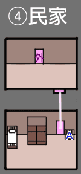
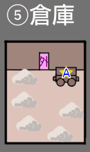
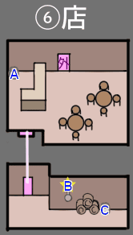
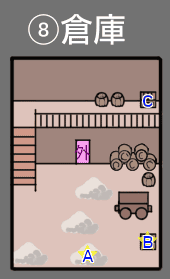
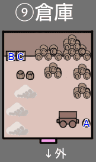
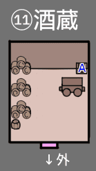

TOP > 西部編 > 攻略 > 罠探し
4. 罠探し
罠アイテムの場所について具体的に説明する。
街の建物内部で各アイテムを拾うことができる（街の外観で拾えるアイテムはない）。
対象に向かってAボタンでアイテムが拾えるが、アイテムがあるかどうか、目印などはない。ただしほとんどは箱やツボ、タンスといった見た目で何か置いてありそうな場所にアイテムが設置してある。以下マップも参照のこと。
また、箱やツボの中には、調べることはできても中に何もない場合もある。
罠アイテムではないが、ラストバトルを見越して回復アイテムも取っておくこと。
西部編の回復アイテムは「バーボン」「テキーラ」「ハマキ」の3種類だが、「バーボン」「テキーラ」はHP回復と同時に酔い状態にもなるデメリットありのアイテムになるので、最低限、デメリットが一切ない「ハマキ」は全て入手しておきたい。
装備品も幾つか取得できるが、装備変更はアイテム回収と罠仕掛けがすべて終わった後にすれば良い。
「空ビン」と「オイル」を見つけると、マッドドッグがふたつを組み合わせて「火炎ビン」を作るかどうか尋ねてくるので、頼めば作ってくれる。断った場合、再度作るよう頼むことはできないため注意。「空ビン」「オイル」単体では罠として使えないので、迷ったらとりあえず作ってもらえば良い。
ただし、罠として使えるのは1つだけ。戦闘中の攻撃アイテムとしても使えるので、複数作っても無駄にはならない。
以下の建物は酒場から見て時計回りに街を回った時の順番にしてある。
罠に使えるアイテムの前に「★」マークをつけている。一つだけあれば罠として十分なアイテムには「☆」。
①CRISTAL BAR
CRISTAL BARのカウンター奥に部屋があるが、この部屋のタンスを左側から右方向へ向かって調べると隠し扉があり、その奥に隠し部屋がある。
以下では「隠し部屋」と表記。
| 番号 | アイテム | 場所 |
|---|
| - | ★パチンコ | ビリーに話しかけるともらえる |
| A | バーボン | 1階カウンター左のツボ ※回復アイテム |
| B | テキーラ | 1階カウンター右端の棚、マスターが罠アイテムを仕掛けている間に取得可能 ※回復アイテム |
| C | ☆オイル | 1階階段の右の部屋の左のツボ |
| D | バーボン | 1階階段の右の部屋の左の箱 ※回復アイテム |
| E | テキーラ | 1階階段の右の部屋の右の箱 ※回復アイテム |
| F | ★マスターポスター | 2階の右部屋、タンス右側（「アニーのシミーズ」がある場所を調べてアニーに怒られた後に取得可能） |
| G | アニーのシミーズ | 2階中央アニーの部屋のタンス（アニーが罠アイテムを仕掛けている間に取得可能） ※装備品 |
| H | ハマキ | 2階左の部屋の宝箱 ※回復アイテム |
| I | バーボン | 1階カウンター奥の部屋の箱 ※回復アイテム |
| J | ジャケット | 隠し部屋のタンス |
| K | ☆オイル | 隠し部屋のツボ |
| L | ☆空ビン | 隠し部屋の箱 |
「マスターポスター」があるマスターの部屋には、$マークが描かれている袋があるが、調べてもマスターとの会話イベントが発生するだけで何も手に入らない。
②酒場右の民家
| 番号 | アイテム | 場所 |
|---|
| A | ハマキ | 1階奥部屋、箱 ※回復アイテム |
| B | ☆空ビン | 1階手前部屋、箱 |
| C | バーボン | 2階手前部屋、箱 ※回復アイテム |
③街の一番右上・保安官事務所（SHERIFF'S OFFICE）
| 番号 | アイテム | 場所 |
|---|
| A | ハマキ | 1階の机 ※回復アイテム |
| B | ★ダイナマイト | 1階の右の箱 |
| C | ピースメーカー | 1階の棚 ※装備品 |
| D | バントライン | 2階の部屋の棚 ※装備品 |
④街の一番右下民家

⑤街の下・右から二番目の倉庫

| 番号 | アイテム | 場所 |
|---|
| A | ★スコップ | 荷車（上側・下側どちらから調べても取れる） |
⑥酒場真下の店

| 番号 | アイテム | 場所 |
|---|
| A | ☆オイル | 1階のカウンター奥のツボ |
| B | ★フライパン | 1階奥の部屋の壁にかかっているフライパン |
| C | ☆にんじん | 1階奥の部屋のツボ |
⑦酒場真下の民家の左、ウェインの宿屋
ここには「ロープ」しかないが、宿は割と広い上、「ロープ」は隠し部屋にあるので注意。
入って左下の部屋に入ったら、階段の裏側に入り、十字ボタン上を押すと隠し部屋に入れる。
この部屋の箱に「ロープ」がある。
⑧街の一番左下の倉庫

| 番号 | アイテム | 場所 |
|---|
| A | ★馬フン | 右下の干し草の塊を調べる（干し草の上側・下側どちらから調べても取れる） |
| B | ☆にんじん | 右下の箱 |
| C | ☆空ビン | 階段の上の箱 |
⑨街の一番左上・倉庫

| 番号 | アイテム | 場所 |
|---|
| A | ★コールタール | 荷車の右のタル |
B
C | ☆にんじん | 左上の箱ふたつに1つずつ合計2つ入っている |
⑩酒場の2つ左の民家
| 番号 | アイテム | 場所 |
|---|
| A | ☆オイル | 階段に半分隠れた扉の奥の部屋の左のツボ |
⑪酒場の左、酒蔵

| 番号 | アイテム | 場所 |
|---|
| A | テキーラ | 右上の箱 ※回復アイテム |